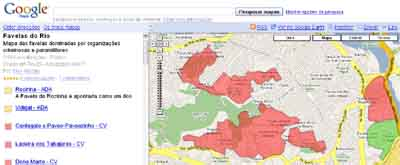

A cidade do Rio de Janeiro é sui generis, porque mistura o clima litorâneo, em belas praias, e a maior floresta urbana do mundo, a Floresta da Tijuca. Aqui no Rio você sai da praia, anda 10 minutos de carro e entra na cachoeira.
Tudo bem, estou exagerando. Nossas praias, apesar de realmente belas, são bastante sujas, tanto a faixa de areia, por causa dos banhistas porcalhões, quanto as águas do mar, por causa do despejo de esgoto in natura das favelas e condomínios de luxo. Também, para chegar da praia até a floresta, os 10 minutos de carro viraram 1 hora, devido ao trânsito caótico por ausência total de fiscalização e da falta de educação dos motoristas. E a floresta, bem, é bonita mesmo, com animais selvagens e tudo! Só que estas belas áreas vêm sendo desmatadas constantemente com o crescimento de favelas.
Apesar de tudo, é muito fácil fazer propaganda turísticas sobre a Cidade Maravilhosa. O turismo sexual é evidente, basta uma pequena visita em páginas pornô na internet para achar "pacotes de viajem" do gênero pra cá. Nos cartões postais a mesma coisa, colocam uma gostosa de biquini, tá valendo. Também somos bem cotados no ramo do turismo do pó.

Mas para visitar o Rio, mesmo que esteja apenas atrás de drogas e sexo, o incauto turista não pode ficar de bobeira. Por isso vale a dica: saiba onde ficam as principais favelas do Rio de Janeiro, e as que são dominadas pelo tráfico de drogas ou pelas milícias!
É isso mesmo, nossa cidade foi mapeada, no mesmo estilo daquele mapinha com localização de máquinas caça-níqueis, com a ajuda do Google Maps. Vejam lá, é bem interessante:
Mapa das favelas dominadas por traficantes e paramilitares neste link.
Mapa das favelas dominadas por milícias neste link.
Não lembro que mandou a dica por e-mail, demorei tanto a postar que esqueci, desculpe. Pronuncie-se blogueiro, para que possa citar a fonte ;)